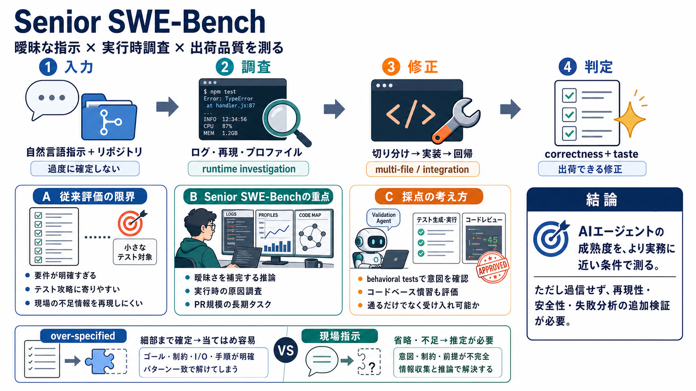

SWE-bench/docs/assets/evaluation.md at main · SWE-bench/SWE-bench · GitHub
Title: SWE-bench/docs/assets/evaluation.md at main · SWE-bench/SWE-bench · GitHub You signed in with another tab or wind…

“シニアエンジニアのように”不完全な自然言語指示と実行時調査をこなし、出荷できる修正を出せるかを測るベンチマーク。
従来のSWE系は要件が過剰に確定しがちで、単純な正誤やテスト攻略へ寄りやすい。
Senior SWE-Benchはこのズレを縮める。
不足・曖昧さ前提（補完が必要）不足した情報で判断する (missing context)
実行時調査が必要（ログ/再現/切り分け）ランタイムで原因を探す (runtime investigation)
自然言語の指示＋リポジトリ情報を与え、変更の提案・実装までを行わせる。
その後、正しさに加えて品質や振る舞いで判定する。
自然言語指示（過度に確定しない）メッセージから推論する (message-driven)
ランタイム correctness＋品質・周辺の振る舞い動作と受け入れを両方見る (acceptance)
ログ・プロファイリング・再現手順といった“実行時調査”を要するタスクを重視する。
静的推論だけでは直せない失敗を作り込む。
ログ・プロファイル・再現ステップobservability を使う (observability)
切り分け→修正→回帰まで原因特定と品質担保 (root-cause)
テスト合格だけでなく、コードベース慣習に沿った“taste（品質）”も含めて採点する。
現場で受け入れられる形を狙う。
ランタイムの期待振る舞いが満たされるかfunctional correctness (correctness)
慣習・実装スタイル・周辺影響までコード品質 (code quality)
validation agentと expert-designed recipes により、提出解へ適応した behavioral tests を生成・検証する。
短い/曖昧な指示でも“意図”を拾う方向性。
| 狙い | 提出解に合わせて追加テストを作り、ズレを露出させる |
|---|---|
| 結果 | 指示の省略があっても、期待振る舞いとの整合を見抜きやすくする |
複数ファイル/SLOC規模、複数サービスにまたがる構成、長いタスクホライズンで“まとまったPR作業”を評価しうる。
単発の小修正に留めない。
複数ファイル・相応のSLOC多箇所変更 (multi-file)
複数サービス/境界を跨ぐ統合まで見る (integration)
複数ステップが必要長期ホライズン (long-horizon)
例では、Google Booksをメタデータ・フォールバックに追加する要件が、自然言語と具体条件で複合的に提示される。
Amazon失敗時のみ・ISBN-13条件・複数ヒット警告でスキップフォールバック条件 (fallback rule)
期待フィールド構造・STAGED_SOURCES追加・supplement時識別子拡張複数インターフェース (interfaces)
over-specified（過剰指定）とは、指示文だけで「どこをどう直すか」がほぼ確定している状態。
Senior SWE-Benchは逆に、曖昧さを前提にする。
細部まで明確→当てはめ容易“テストに都合よく”なる (overfitting to tests)
省略・不足→補完/推定が必要不足を埋める推論 (inference)
指示が曖昧だと意図の保証が難しいため、validation agentが提出解へ適応するテストで整合を測る。
taste scoringはコードベース慣習に沿うか等を合算する。
意図した振る舞いを直接検証へ行動レベルの妥当性 (behavioral alignment)
正しさ＋実装品質（慣習/保守性）受け入れられる実装 (acceptability)
方向性は妥当：自然言語の不足、実行時調査、taste重視の三点セットは“実務力”に近い。
ただしtasteの具体基準や失敗モード分解は不明で、テスト偏りの限界もある。
validation agent×behavioral testsで評価を成立測定を高度化 (evaluation engineering)
PR規模感・複数ステップで採用側に説明しやすい現場作業を再現 (work simulation)
安全性/運用/セキュリティはテスト外で残る可能性評価だけでは不十分 (residual risk)
Senior SWE-Benchは、曖昧さ・実行時調査・出荷品質を同時に扱うことで、AIエージェントの成熟度をより現実に即して測ろうとしている。
一方で、結果を“現場で必ず通用”とは言い切れない。
別データセットでの再現性、安全性検証、失敗モード分析追加検証が必須 (due diligence)
“理想に近づく評価”として扱い、過信しない過信回避 (calibrated use)
Title: SWE-bench/docs/assets/evaluation.md at main · SWE-bench/SWE-bench · GitHub You signed in with another tab or wind…
Title: README.md · princeton-nlp/SWE-bench at main # Datasets: --- princeton-nlp / SWE-bench like 134. | | SWE-bench is…
We read every piece of feedback, and take your input very seriously. ## Use saved searches to filter your results more q…
## SWE-bench. SWE-bench is a benchmark for evaluating Language Models and AI Systems on their ability resolve real world…
You signed in with another tab or window. SWE-bench / **SWE-bench** Public. Code and data for the following works:. …